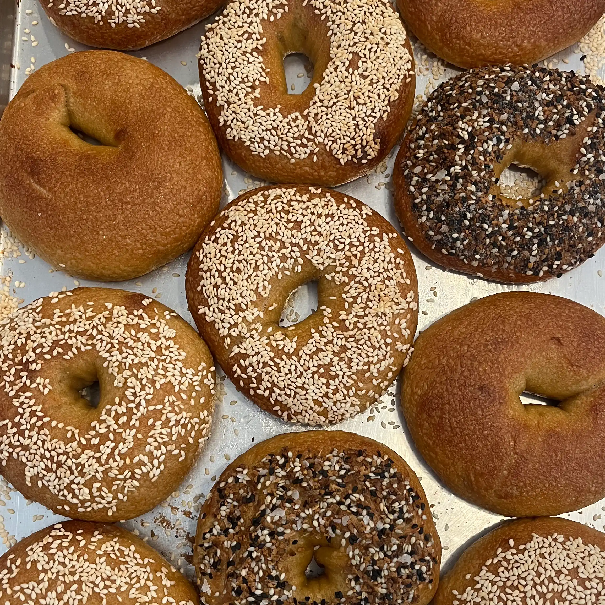
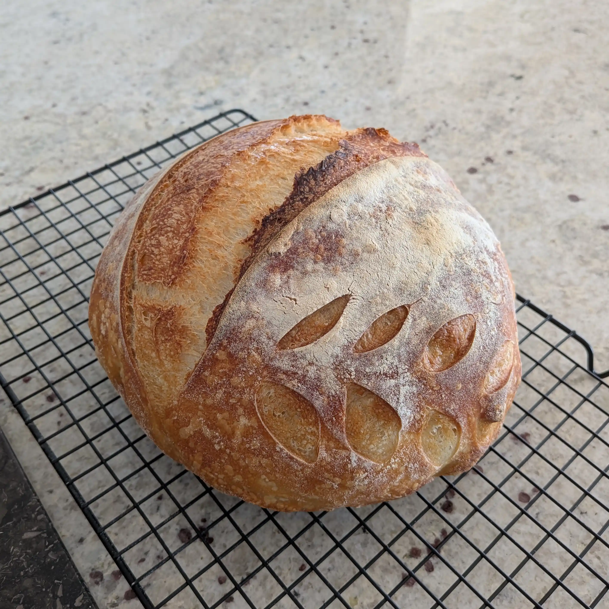

Made With Love
We are based out of our home kitchens in Grand Forks, North Dakota. Two self taught bakers driven by a passion for baking and an enjoyment of good food!
Specialties
img
Sourdough
Made with prime sourdough starter (named Florentine) and high quality King Arthur bread flour, our sourdough bakes are a must-have!
img
New York Style Bagels
Proofed, rolled, boiled, baked! Our hand crafted bagels have the same chew interior and crusty exterior reminiscent of a bagel right out of NYC!
img
Complimentary Additions
Our classic pesto, "Oma's Recipe" strawberry jam, and our expertly developed everything bagel seasoning are perfect pairs to our baked bread products!